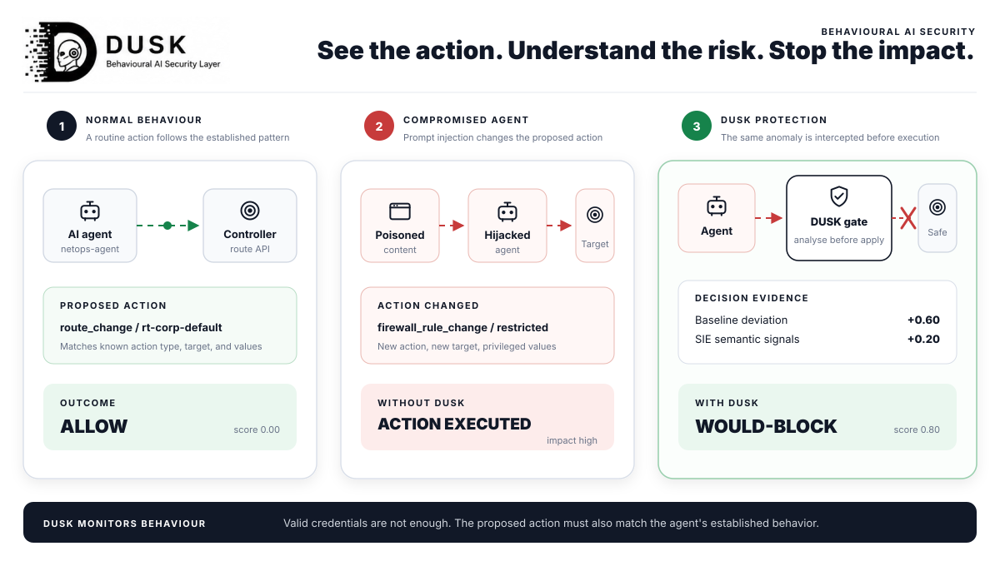

Ritik Sah.
I build cloud, full-stack and security-focused products. Computing Systems undergraduate in London.

Ritik Sah · building
reliable software,
cloud platforms and
security systems.
Python, Azure and full-stack
engineering, with security
built into the system.
Get to know me
Software engineering, cloud delivery and security, connected through practical project work.
I build cloud, full-stack and security-focused products. Computing Systems undergraduate in London.

Have an engineering role or project in mind? Let’s talk.
Core disciplines
API and AI maintainer
View maintainer recordProfessional milestones
Academic recognition and public contributions that support my engineering work.
View resumeDUSK agent-action-monitor example
Explore integrationRecipient in Years 1 and 2
Project Showcase and Poster Exhibition winner
The story so far
Four phases that moved me from data operations into software, cloud and security engineering.
Maintained SQL and Oracle data, analysed trends and supported accurate operational records at Arunima Secondary School.
Accuracy · data operationsStudied Computing Systems at Ulster University London and earned Dean’s Award recognition in Years 1 and 2.
Software · cloud · networksMoved into OpenShield and DUSK delivery across cloud posture, AI security and externally published integration work.
OWASP · Superlinked SIEWon the QAHE TechFest Project Showcase and Poster Exhibition while continuing evidence-backed product work.
TechFest winner · portfolioFoundationData work taught me to value accuracy and dependable systems.
Turning pointUniversity projects moved me from operating systems to engineering them.
MomentumOpen source turned individual projects into public, collaborative evidence.
My engineering stack
Building dependable software with tools selected for delivery, observability and long-term maintainability.
Portfolio
Five projects chosen for depth, external validation and relevance to software, cloud and security roles.
Engineering lifecycle
The questions I ask, the decisions I make and the evidence I expect across a software product’s lifecycle.
What problem deserves solving?
Understand the user, operating context, constraints, failure impact and what a successful outcome can be measured against.
Where should responsibility live?
Separate presentation, APIs, data, identity and infrastructure. Define contracts, trust boundaries and degraded behaviour before implementation.
What is the smallest useful slice?
Deliver thin vertical slices, keep configuration explicit, version schema changes and make the local path reproducible for contributors.
What evidence makes this trustworthy?
Combine automated tests, contract checks, security scanning, runtime checks and focused manual review instead of treating one green check as proof.
How will it fail and improve?
Design observability, recovery paths and ownership into delivery. Use incidents, telemetry and user feedback to guide the next decision.
Open source
Recent public activity from GitHub.
● Get in touch
“From reliable software to secure cloud platforms, I’m ready to contribute, learn and build with your team.”